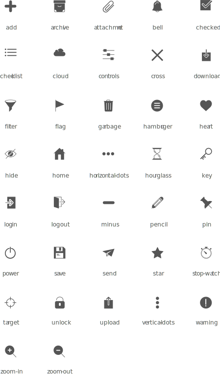

Iconography
Icons are more literal and are intended to bring clarity to their subject. All icons are available in dark and light theme to adapt any shade of colour. We are planning to provide a library of icons that are especially helpful when differentiating several point.
Sizing
Six sizing class are available for SVG icons.
icon-36 icon-24 icon-20 icon-18 icon-16 icon-14
Icons

Usage
- Every icon HTML element should have a default CSS class
icon. - Mention the size of the icon (say
icon-24for 24px). - Finally add the icon name prefixed with its theme. For dark theme use
icon-and for lighter theme uselight-icon-followed by its name.
Example
To implement unlock icon (dark theme) with size 16px,
<span class="icon icon-16 icon-unlock"></span>
For light theme,
<span class="icon icon-16 light-icon-unlock"></span>
Development
Guides to extend SCSS library:
- Icons related variables are found within
scss/support/icons.scss. - Add custom icon within
assets/icons/customfolder and add it's name into$custom-icon-listmap (without extension). - Each entry takes three boolean values representing it's state - normal, hover and active.
- Custom icons classes are prefixed with
custom-icon(Use SASS variable$custom-icon-prefix).
Example
To add a custom delete icon with name custom_delete.svg and add this to the $custom-icon-list map.
custom_delete: (true, false, false)
To add icon's hover state, put a hover state icon of it in the same location (assets/icons/custom) with the same name ending with _hover (something like this custom_delete_hover.svg) and change the value to true in $custom-icon-list map.
custom_delete: (true, true, false)
To add icon's active state, put a active state icon of it in the same location (assets/icons/custom) with the same name ending with _active (something like this custom_delete_active.svg) and change the value to true in $custom-icon-list map.
custom_delete: (true, true, true)
Usage
<span class="icon icon-16 custom_delete"></span>